Inleiding
Deze handleiding beschrijft de functionaliteiten van de PostNL plugin en hoe u de PostNL plugin in uw webwinkel kunt installeren. Wij adviseren om de plugin eerst in een testomgeving te installeren voordat u deze in uw live webshop plaatst. De installatie kunt u op twee manieren uitvoeren:
- Via de WordPress plugin directory
- Handmatig uploaden
Met deze WooCommerce plugin kun u vier soorten PostNL zendingen aanmaken:
- Pakketten binnen Nederland (huisadres en ophaallocaties PostNL)
- Pakketten zowel binnen de EU als buiten de EU
- Brievenbuspakje
- Ongefrankeerd label
Inhoud
1 Registratie
Om gebruik te kunnen maken van de PostNL plugin in WooCommerce, zal er een registratie moeten worden gedaan via PostNL-plugins.nl. Maak hiervoor een API-key aan in Mijn PostNL voor WooCommerce (of via uw accountmanager) en gebruik de gegevens die onder de API keys staan vermeld. Gebruik de productiekey voor de registratie op PostNL-plugins.nl.
Let op! Voor het gebruik van de PostNL plug-in heeft U een contract nodig.
2 Installatie
Wij adviseren de installatie altijd eerst op een testomgeving uit te voeren en een back-up te maken van uw webshop voordat u begint.
2.1 Via de WordPress plugin directory
Om de PostNL plugin te installeren via de WordPress plugin directory volgt u de volgende stappen:
- Ga in WordPress naar het menu Plugins > Nieuwe plugin.
- Typ in Postnl en klik op zoeken.
- Kies de plugin WooCommerce PostNL export en klik op Nu installeren. De plugin wordt nu gedownload.
- Wanneer het downloaden voltooid is, klikt u op Plugin activeren.
2.2 Handmatig uploaden
- Download de zip file van de plugin vanaf de WordPress site: http://www.wordpress.org/plugins/woocommerce-postnl/
- Ga in WordPress naar het menu Plugins > Nieuwe plugin.
- Klik bovenin het scherm op Uploaden.
- Kies het bestand en klik op Nu Installeren.
- Wanneer het installeren voltooid is, klikt u op ‘Plugin activeren’.
2.3 Testen
Met de plugin van PostNL worden bepaalde bezorgopties toegevoegd aan uw checkout. Welke bezorgopties u wilt aanbieden aan uw klant, deze zijn terug te vinden in de configuratie van de PostNL plug-in.
Wij adviseren dan ook om na het installeren van de plugin uw bestelproces goed door te lopen of alles naar wens is. Met de checkout is het namelijk mogelijk om bijvoorbeeld uitgestelde levering in te stellen, het is dan fijn voor u om te zien wat uw klanten ook zullen zien.
Ook omdat niet alle checkouts in Woocommerce hetzelfde werken is het nogmaals goed om te kijken of alles naar wens staat. Staat alles op de juiste plaats en is het goed uitgelijnd? Onze tip is om hier naar te kijken voordat uw klanten dit gaan gebruiken.
3 Configuratie
Ga naar het menu WooCommerce → PostNL om de PostNL plugin te configureren.
3.1 Algemeen
API instellingen
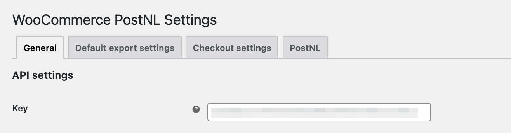Om verbinding te kunnen maken met uw PosNL account is het noodzakelijk om hier uw API-key in te vullen. Zie Hoofdstuk 1.
Algemene instellingen
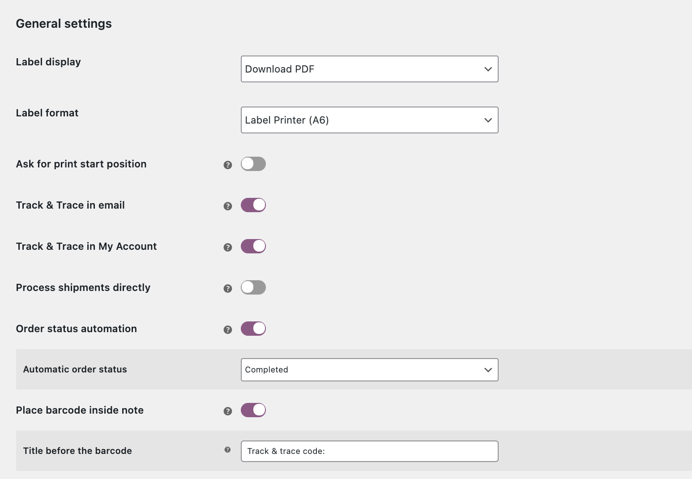Label weergave
Geef hier aan of u het label direct wilt downloaden of wilt openen in een nieuw scherm.
Label format
Geef hier aan of u het label wilt printen op A4 formaat of op A6 formaat.
Track&Trace instellingen
Stel ’track&trace in email’ in zodat de track&trace van de order wordt meegenomen in uw track&trace email."
Verwerk zendingen direct
Als U wilt dat er direct een barcode wordt gegenereerd na exporteren van de zending, zet U deze instelling aan.
Deze instelling moet aan staan als u wilt dat de track en trace-code wordt toegevoegd aan de mail 'Bestelling afgerond en/of verzonden' en daarbij ook gebruik maakt van de Orderstatus automatisering ('Afgerond'). Anders word de track en trace-code niet toegevoegd.
Orderstatus automatisering
U kunt de status van de zending door de plugin na exporteren direct laten wijzigen naar een gekozen status. Op het moment dat de zending de status 'Afgerond' krijgt, wordt er een mail naar uw klant verstuurd. Door 'Track en trace in email' en 'Verwerk zendingen direct' aan te zetten, krijgen uw klanten een track en trace-code.
Diagnostische hulpmiddelen
U kunt de diagnostische hulpmiddelen inschakelen op het moment dat er problemen zijn met het exporteren van de zendingen. In dit bestand wordt de communicatie tussen WooCommerce en PostNL beschreven. Support kan dit gebruiken om het probleem te identificeren en te verhelpen.
3.2 Standaard exportinstellingen
Pakkettype koppelen aan verzendtype
U kunt een verzendmethoden koppelen aan een pakkettype, zodat het juiste label wordt aangemaakt in uw PostNL account. Met onderstaand voorbeeld lichten we dit verder toe. In het voorbeeld is te zien dat de verzendmethode Vast tarief is gekoppeld aan het pakkettype Pakket Dit betekent dat orders met deze verzendmethode als pakket doorgezet worden naar PostNL.
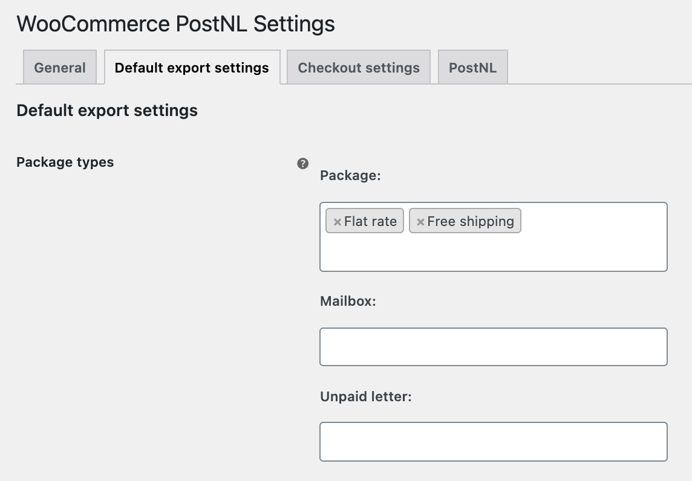
Wanneer er gebruik wordt gemaakt van verzendklassen, is het mogelijk om deze aan de checkout te koppelen.
Let op! Het gaat hier om de standaardinstelling. Uiteraard kan dit nog per order handmatig aangepast worden.
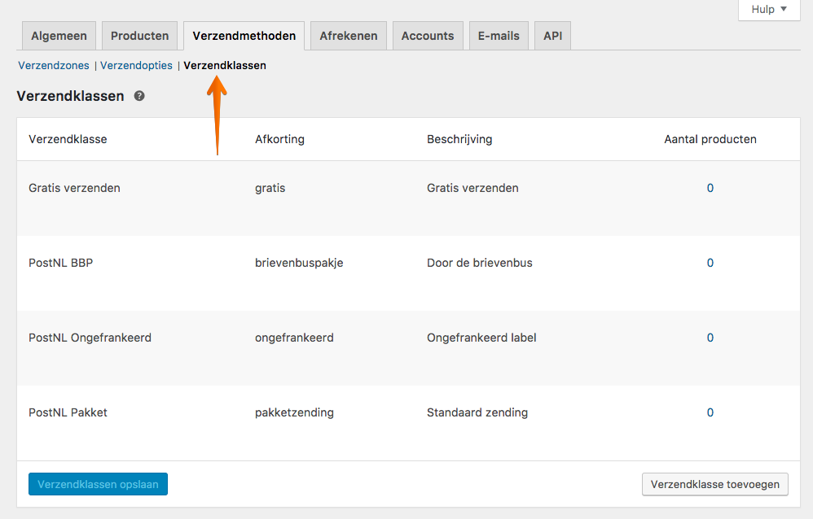
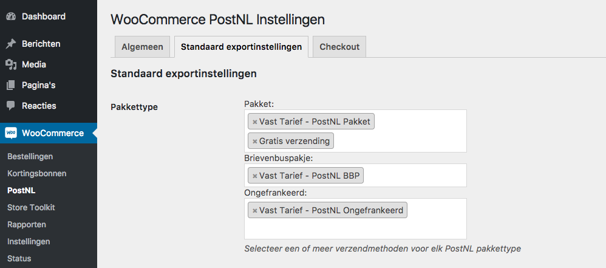
Leeg pakket gewicht
Geef hier aan wat het gewicht van een leeg pakket is, afgerond op gram.
Label omschrijving
Met deze optie kunt u een beschrijving toevoegen aan de zending. Dit zal worden afgedrukt op de linkerbovenhoek van het label en kunt u gebruiken om de zending in uw zendingenoverzicht op te zoeken. Er zijn hiervoor enkele variabelen beschikbaar die U kunt vermelden op uw label.
Default HS Code
Vul hier een default HS Code in. Deze wordt gebruikt als er geen goederencode is ingevuld bij uw product. U kunt goederencodes vinden op tarief.douane.nl.
Customs shipment type
Geef hier aan of de producten worden verkocht als giften, commerciele goederen, documenten etc.
Standaard land van herkomst
Vul hier het standaard land van herkomst in.
3.3 Checkout
Checkout settings
Wanneer de optie PostNL adresvelden aangevinkt wordt er gebruik gemaakt van de PostNL adresvelden. Dit houdt in dat straat, huisnummer en toevoeging los komen te staan. Als u gebruik wilt maken van de standaard WooCommerce adresvelden, vink deze optie dan uit.
Ook is het mogelijk om ervoor te kiezen de checkout niet enkel bij pakketten te tonen maar ook voor alle verzendmethoden. Daarnaast is het mogelijk om de checkout te verplaatsen via Checkout positie, zodat hij op de gewenste positie komt te staan.
Om bezorgopties te kunnen tonen moet dat hier worden ingeschakeld. Alleen dan worden de instellingen van het tabblad 'PostNL' zichtbaar in de checkout van uw webshop na het invullen van juiste adresgegevens.
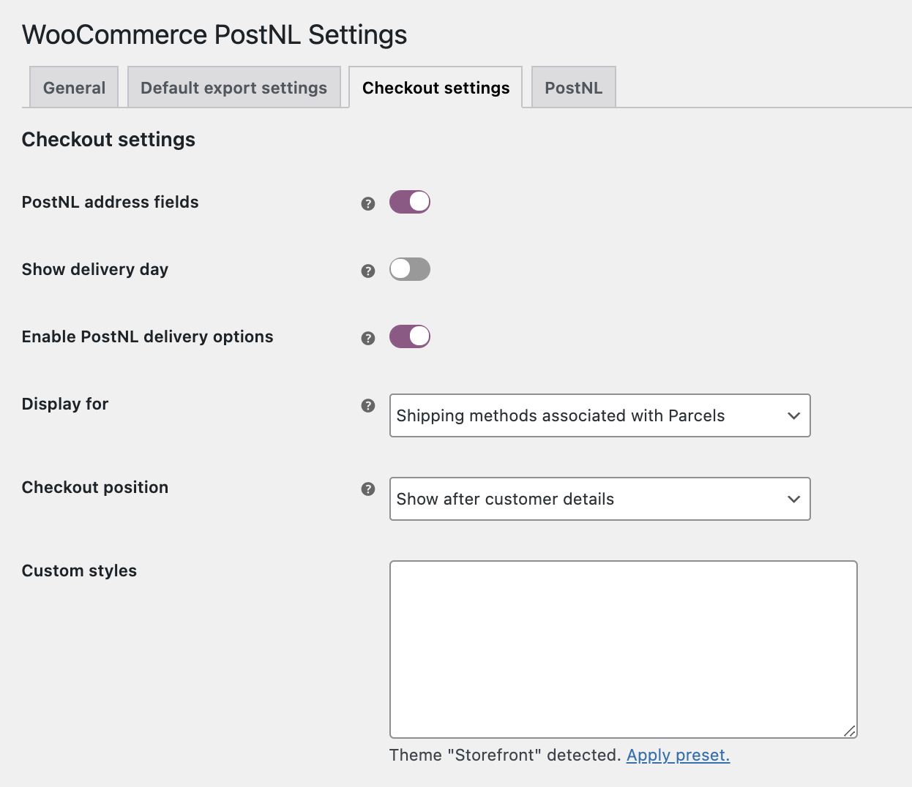3.4 PostNL
PostNL instellingen
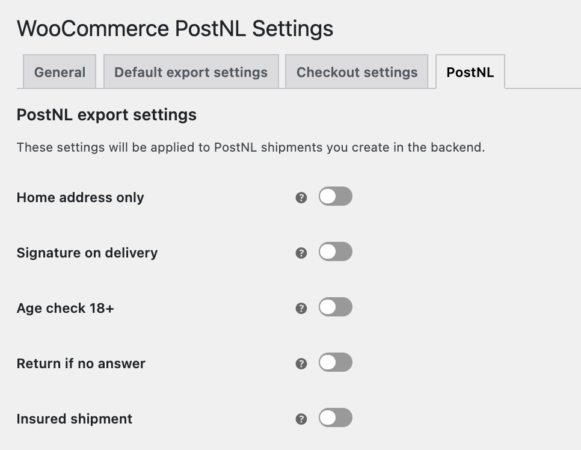
Geef aan wat uw standaard verzendopties zijn voor uw Nederlandse pakket zendingen. U kunt hier kiezen voor alleen huisadres, handtekening voor ontvangst, Leeftijdscheck 18+, retour bij geen gehoor en verzekerd verzenden. Uw zendingen krijgen hiermee standaard de verzendoptie mee wanneer u deze exporteerd. De opties die u hier aangeeft, kunnen bij het exporteren altijd nog per zending aangepast worden.
Op basis van de opties Afleverdagen, Sluitingstijd, Verwerkingstijd en Leverdagen venster worden de juiste levertijden en –dagen getoond aan uw klanten via de checkout, gebaseerd op uw manier van orderverwerking.
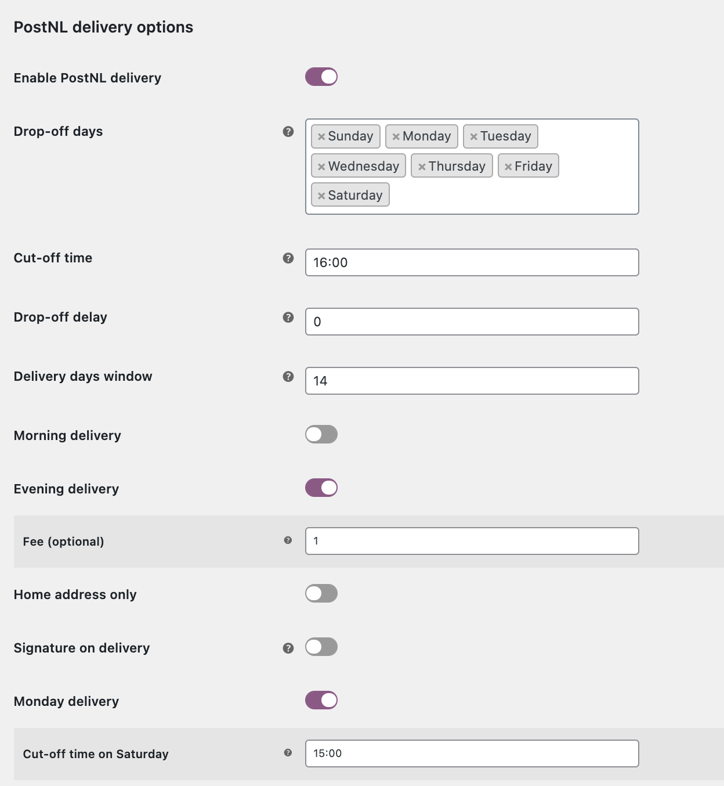Afleverdagen
Hiermee kun u aangeven op welke dagen u het pakket afgeeft bij een PostNL locatie. Uw klanten krijgen hiermee de juiste beschikbare bezorgdagen aangeboden.
Sluitingstijd
Met de sluitingstijd kun u aangeven tot welk moment van de dag de orders nog verwerkt kunnen worden. Als u elke dag rond 17:00 de bestellingen naar een PostNL locatie brengt is het handig om de laatste order rond 16:00 te verwerken. Wanneer uw klanten na dit tijdstip een bestelling plaatsen zien zij een latere levermogelijkheid. Bijvoorbeeld: Sluitingstijd is om 16:00 en u kunt dezelfde dag de orders verwerken en op tijd inleveren. Dan zal uw klant als eerste levermogelijkheid voor 16:00 de volgende dag zien. Wanneer uw klant na 16:00 besteld zal het de dag erna zijn.
Verwerkingstijd
U kunt hier instellen hoeveel dagen nodig zijn om een order, die vóór uw laatste besteltijd binnenkomt, te verwerken. Als U bijvoorbeeld 1 dag invult, zal er in de weergave in de check-out altijd rekening gehouden worden met het feit dat u de pakketten dus niet de volgende dag inlevert. Bijvoorbeeld: De bestelling wordt geplaatst op 16 september voordat U naar het PostNL punt gaat. U heeft echter een verwerkingstijd van 1 dag ingesteld, dus de eerste mogelijkheid om het pakket in te leveren is 17 september. Uw klant krijgt dan dus pas 18 september als eerst mogelijke leverdag te zien.
Leverdagen venster
Met deze optie kun u aangeven tot hoever in de toekomst uw klanten een leverdag kunnen kiezen. In dit geval staat het op 10 dagen, maar dit kan natuurlijk ook 2 of 5 dagen zijn. Het maximum is 14 dagen. Wanneer het leverdagenvenster op '0' wordt gezet, zullen de dagen niet meer worden getoond, waardoor de consument geen dag meer kan kiezen.
Let op: PostNL houdt geen rekening met de gekozen leverdag van uw klant. U dient zelf zorg te dragen voor het op de juiste dag inleveren van uw pakket.
PostNL Afhaalpunt 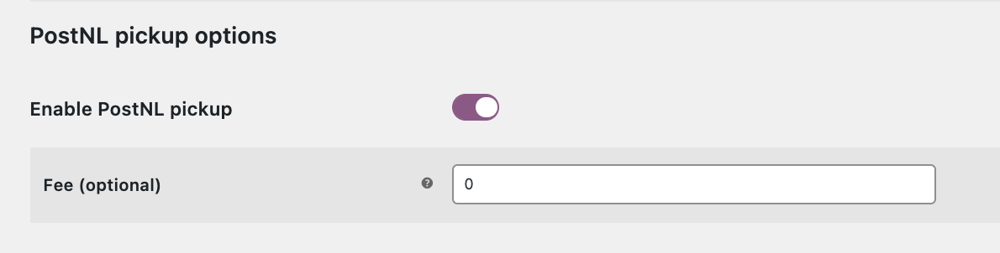
Zet deze optie aan als U klanten de mogelijkheid wilt geven om de zending op een PostNL-punt te laten afleveren. Hier een negatief bedrag invullen zal voor korting op de verzendkosten zorgen.
4 Orderoverzicht
In het orderoverzicht kunt u eenvoudig zien wat voor zending de nieuwe bestelling betreft. Ook kunt u makkelijk het pakkettype wijzigen indien dit gewenst is. Wanneer U op Pakket klikt verschijnt het venster eronder. Hierin is het mogelijk om verzendopties uit te schakelen of juist toe te voegen of het soort zending aan te passen.
Na het kiezen van uw gewenste opties of het wijzigen van het Soort zending klikt u op Opslaan en daarna kunt u deze keuze exporteren naar PostNL en het gewenste label aanmaken.
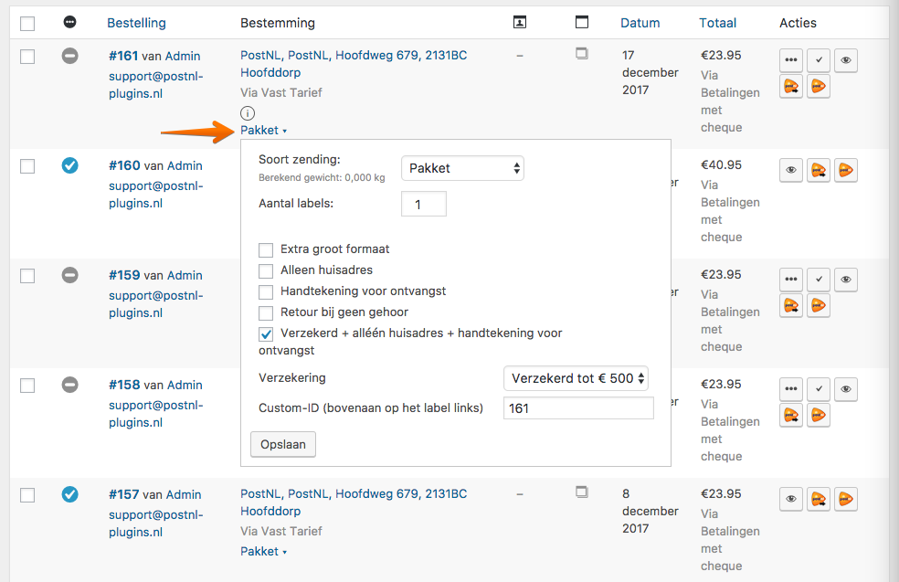
U kunt op twee manieren uw orders doorzetten naar PostNL en hier vervolgens een label voor uitprinten. Namelijk door een order (of meerdere orders) te selecteren en vervolgens naar Acties te gaan. Daar kunt u uw keuze maken Exporteren, Printen of Exporteren en Printen.
Let op: We raden u aan om niet meer dan 20 orders tegelijk in bulk te verwerken.
Zowel bij bulk als bij een enkele export wordt er een laadicoontje zichtbaar.
Vervolgens wordt de pagina ook direct ververst. (zie voorbeeld hieronder)
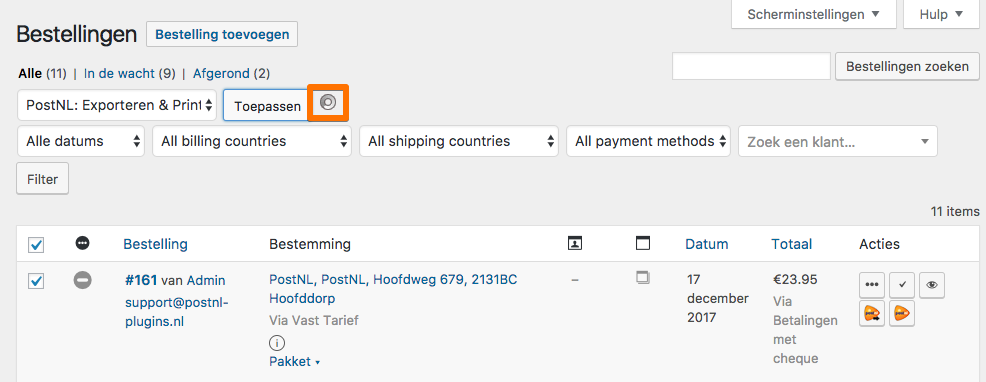
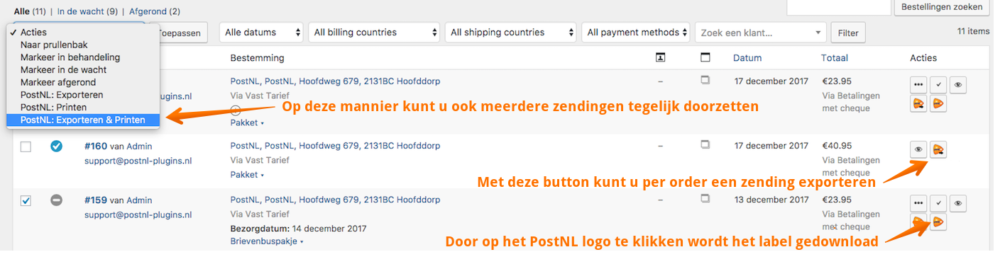
Let op! Als u de eerste keer het label probeert te printen, is het mogelijk dat een pop-up blocker de download blokkeert.
5 Orderdetails
Uiteraard is het ook mogelijk om zendingen vanuit de order detailpagina zendingen aan te maken. Door op een order te klikken komt u op een pagina waar meer details over deze bestelling te vinden is.

6 Zending informatie
Als u informatie over uw zending wilt zien is het niet nodig om dit te bekijken in uw PostNL account. U kunt deze informatie bekijken in uw order overzicht in WooCommerce.
Bij elke order die wordt doorgezet naar PostNL en waarvoor een label is aangemaakt komt een ⓘ te staan. Door hierop te klikken wordt er meer informatie getoond over de status van de zending.
7 Extra opties
Het is in Woocommerce ook mogelijk om verzendtarieven te hanteren voor producten of bepaalde productgroepen. Om hier meer over te lezen kun u het volgende PDF bestand downloaden. Hierin staat meer uitgelegd over de werking van de verzendklassen of het werken met table rates.
Klik hier voor de uitleg